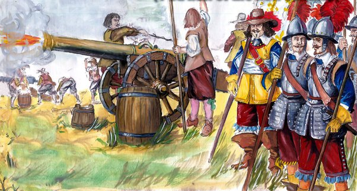
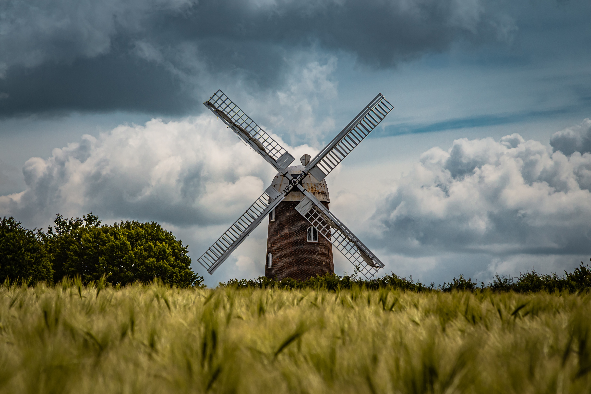
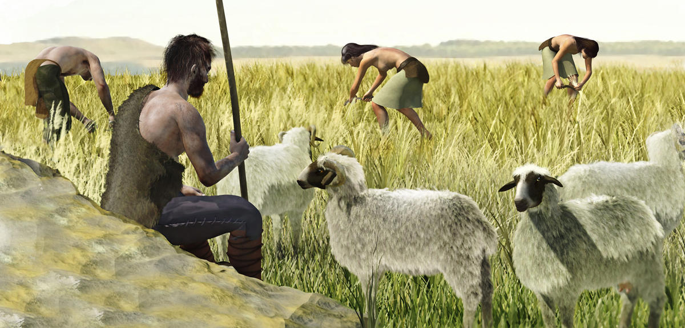

3,3 Juta Tahun Lalu
3,3 juta tahun yang lalu muncul alat pertama berupa serpihan batu tajam yang digunakan sebagai pisau. Batu tak berbentuk yang lebih besar digunakan sebagai palu. Teknologi tersebut ditemukan di Danau Turkana, Kenya. Alat-alat tersebut dibuat 3,3 juta tahun yang lalu dan kemungkinan digunakan oleh nenek moyang seperti australopithecus.
Revolusi Neolitik
Revolusi neolitik ada beberapa teknologi kunci muncul bersama-sama. Manusia mulai berpindah untuk mendapatkan makanan dengan berburu dan mereka sebagai petani. Orang-orang berkumpul dalam kelompok yang lebih besar. Kemudian tanah liat digunakan untuk tembikar dan batu bata, pakaian tersebut dibuat dari kain tenun. Kita juga memiliki kemungkinan ditemukan pada revolusi neolitik.
4000 SM Kapal Layar
4000 tahun sebelum masehi adalah masa kapal layar pertama kali digunakan di Sungai Nil. Namun sayangnya, Sungai Nil tidak memberikan ruang luas seperti lautan sehingga bisa digunakan berlayar secara bebas. Kapal tersebut memiliki dayung untuk navigasi.
 Sejarah Perkembangan Teknologi
Sejarah perkembangan teknologi pertama kali ini dimulai dari 3,3 juta tahun yang lalu kemudian berkembang secara terus-menerus hingga saat ini. Berikut ini sejarah perkembangan teknologi dari masa ke masa.
850 CE Bubuk Mesiu Ditemukan
Para alkemis di Cina sudah mulai menemukan bubuk mesiu sebagai hasil dari pencarian terhadap obat mujarab untuk memperpanjang hidup. Hal tersebut juga didorong untuk membuat roket yang menempel pada panah. Pengetahuan terhadap bubuk mesiu ini mulai menyebar ke Eropa di abad ke-13.
950 Kincir Angin
Perkembangan teknologi dari masa ke masa juga dibuktikan dengan adanya kincir angin. 5000 tahun setelah kapal layar pertama, angin akhirnya digunakan untuk mengoperasikan pabrik. Kincir angin pertama ada di Persia. Kincir angin horizontal tersebut dipasang pada poros vertikal. Namun, belakangan ini kincir angin Eropa bertipe vertikal. Hal tersebut juga muncul spekulasi bahwa kincir angin mungkin sudah ditemukan secara independen di Persia dan di Eropa.
1044 Kompas
Di Tahun 1044, kompas menjadi teknologi selanjutnya yang ditemukan. Penyebutan definitif pertama kompas magnetik dari buku China yang selesai di tahun 1044. Hal tersebut menggambarkan bahwa tentara menemukan jalan mereka dengan menggunakan sepotong besi magnet berbentuk ikan yang mengembang di semangkuk air ketika langit terlalu mendung untuk melihat bintang. Jam Mekanis